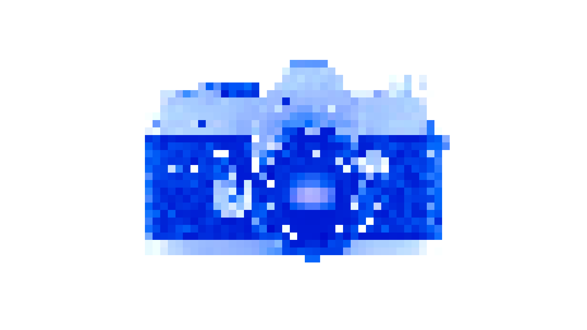

Welcome! This website is about the Inputs and Outputs of Physical Media! When I describe Inputs, I mean the technologies that make this physical media usable and possible. When I describe Outputs, I mean the physical media itself, the content embedded within it, and its use on my website!
This website was created entirely by Sasha Guardado, a second-year Graphic Design student at OCAD University. This website involves all the physical media I, Sasha Guardado, and my friends have to share.
The reason why I created this website is because of my collection of physical media I keep in my house that my family and I still use, despite some media being up to a decade old (or even older). I enjoy keeping them in my space, even if they are not fully functional, and I wanted to make a digital space for others to enjoy this physical media as well.
This website is also not fully finished, but it will be continuously updated with new physical media that I continue to collect. Thank you for being here. This took a lot of work.
Click Here For All Sources Used
